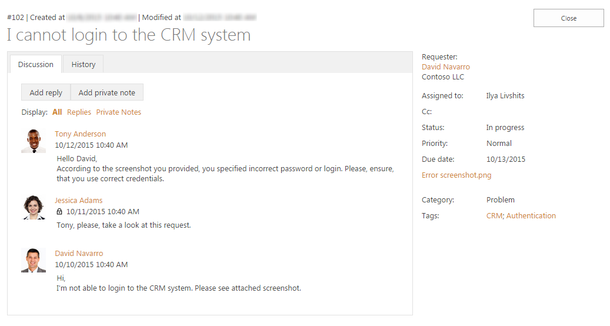
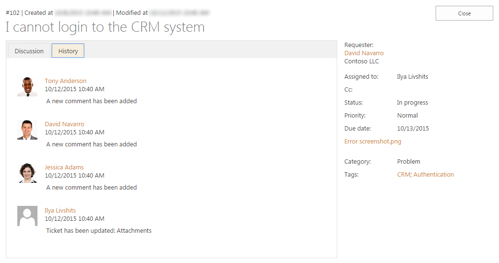
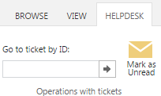
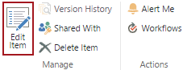
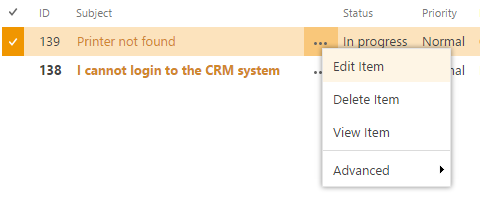
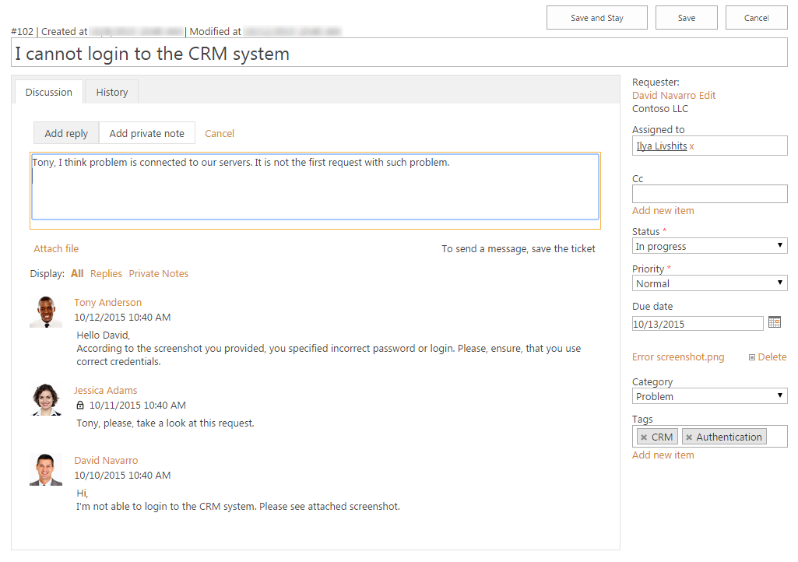
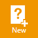
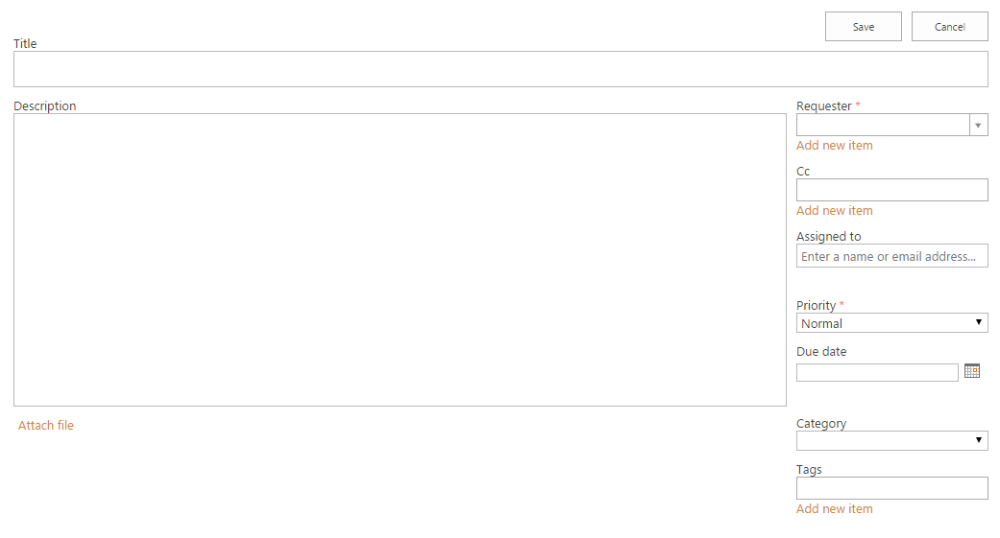

Ticket management¶
View ticket¶
You can open up a ticket by clicking its title. You will be presented with a form like this one:

You can see the Discussion tab with conversation between agent and requester. You may notice a small lock underneath an agent’s name, it tells that this message is a private note that is visible to agents only and not to the requester. The requester will not receive any notification about it and will not be able to read it. Also there is a list of attachments on the right side of the view, below Due Date.
The ticket’s change history can be opened by clicking the History tab:

Once you opened the ticket form as the assignee, it is marked as read. But certainly you may want to mark the ticket as unread right from the form you are currently in. To do this open HelpDesk ribbon tab and click Mark as unread button (make sure you are the assignee of the ticket).
You can also open a ticket by entering its ID in the box and hitting Enter.

Most of the ticket fields are displayed in the table on the right hand side of the screen:
- Requester
- The person from the Contacts list who requested the ticket (if the contact has his organization specified you’ll see it next to his name).
- Assigned to
- The SharePoint user that is currently working on the ticket.
- Cc
- Carbon copy. Contacts specified in this field will receive the same notifications as the requester.
- Status
- Ticket status. There are three statuses by default: New, In progress and Solved. You can also add your own.
- Priority
- Relative ticket priority (Low, Normal, High, Urgent).
- Due date
- The date when the ticket has to be resolved by.
- Category
- The type of the ticket (Question, Incident, Problem, Request)
- Tags
- Some key categories to classify the ticket.
Edit ticket and add comments¶
To open the ticket for edit from a display form click the “Edit Item” button on the ribbon under the “View” tab:

To open ticket for edit from a list of tickets click the appropriate button in the context menu:

To add a reply or a private note click the “Add reply” or “Add private note” button and you’ll get to the edit form, where you can enter your message. Click save and your comment will be added.

Add new ticket¶
HelpDesk is able to create new tickets from email messages, but you may need to create a new ticket manually. Click the button in the navigation bar on the right hand side of the page:

When creating a new ticket Title, Requester, Status and Priority fields are required to be filled in.
